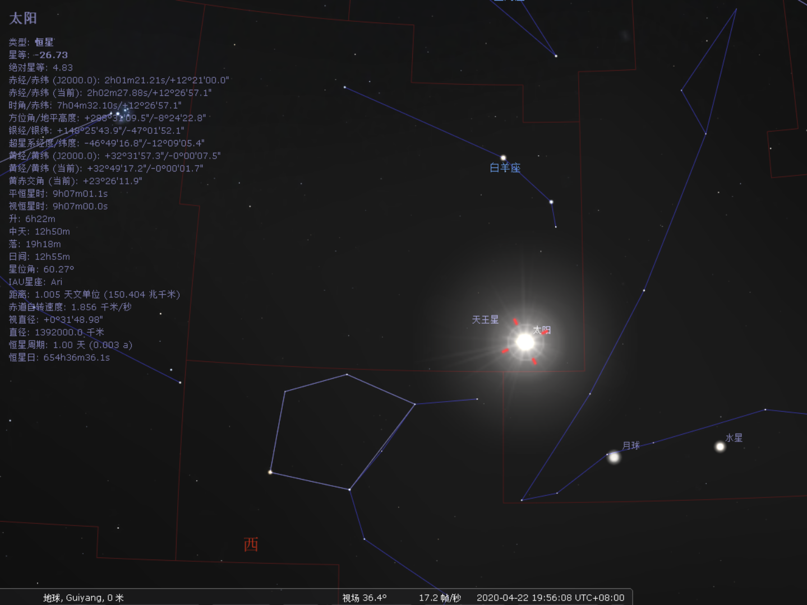
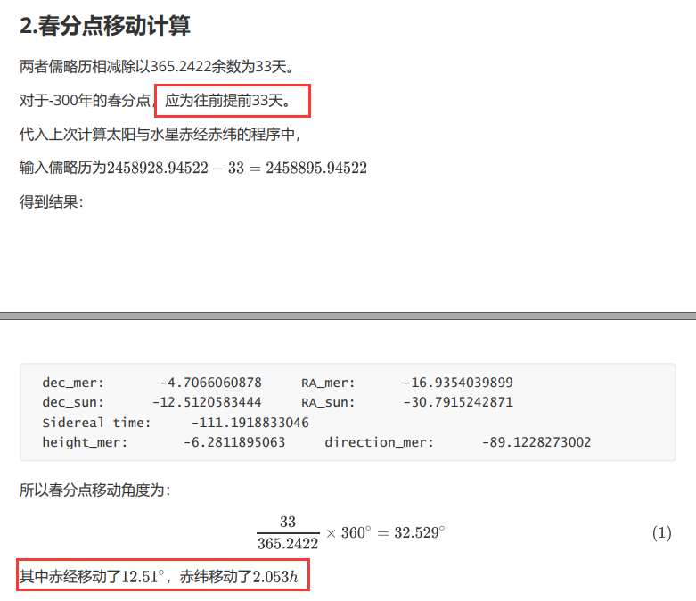

春分点计算 题目内容 大约公元前300年，埃及天文学家将沿黄道附近的天区划分为12等份。这些天区的星座成为著名的黄道十二宫。当时，春分点位于白羊座中。利用JPL DE405历表和你所能找到的子程序(SOFA等)计算由于岁差的影响，至今春分点已经移动了多少个度？春分点现在位于哪个星座？
实验步骤 方法一： 1.春分日计算 首先可以通过DE405星表，计算当太阳位于春分点时的日期。
需要满足的条件：
于地球赤道坐标系，太阳达到升交点。
太阳在持续向上移动。
代码为：
1 2 3 4 5 6 7 8 9 10 11 12 13 14 15 16 17 18 19 DOUBLE PRECISION BEGIN,FIN,ET DOUBLE PRECISION R1(6 ),R2(6 ),z_old BEGIN=2455562.542 FIN=2462137.542 ET=BEGIN z_old=0.0 DO 10 WHILE (ET.LE.FIN) CALL PLEPH(ET,11 ,3 ,R1) if ( (z_old/R1(3 )).LT.0. 0. and.z_old.lt.0 ) THEN WRITE (*,*)ET,z_old,R1(3 ) endif ET=ET+0.01 z_old=R1(3 ) 10 CONTINUE END
通过限定时间范围，即可得到太阳到达春分点时的日期。
计算前308至前292年的春分日，与2011年至2028年的春分日。
计算结果为：
1 2 3 4 5 6 7 8 9 10 11 12 13 14 15 16 17 18 19 20 21 22 23 24 25 26 27 28 29 30 31 32 33 34 35 36 37 38 1608611.9899908025 -3.3999288407195096E-005 3.5377153268885712E-005 1608977.2399826385 -4.8811629154756671E-005 2.0586780108505960E-005 1609342.4999744743 -4.0921883676155874E-006 6.5320541232686928E-005 1609707.7499663103 -6.1865031685832701E-005 7.4995287712353517E-006 1610073.0099581461 -4.1802221983694085E-005 2.7616098645180404E-005 1610438.2699499819 -1.0623763719962457E-005 5.8775935470140213E-005 1610803.5299418177 -1.6953759657526416E-005 5.2417894337343843E-005 1611168.7899336535 -1.0441139102217840E-005 5.8987869356776491E-005 1611534.0399254896 -4.9146797628333303E-005 2.0222776838522191E-005 1611899.2999173254 -4.6036247410724020E-006 6.4790891506234403E-005 1612264.5499091614 -3.4592448974239687E-005 3.4824468118202544E-005 1612629.8099009972 -3.1802720616854320E-005 3.7555898146484148E-005 1612995.0698928330 -4.3830828289906029E-006 6.5032845989254368E-005 1613360.3198846690 -2.2407354122986581E-005 4.6985443897898404E-005 1613725.5698765051 -6.6549141571116974E-005 2.8209887748438522E-006 1614090.8298683409 -5.3450597549308887E-005 1.5965076884435613E-005 1614456.0898601767 -2.7472387161429825E-005 4.1908243416531078E-005 2456006.8899900671 -6.5983093608281535E-005 2.7306215941240962E-006 2456372.1499819029 -3.2778569050337250E-005 3.5897295586351631E-005 2456737.4099737387 -2.7174001911972460E-005 4.1500860416535091E-005 2457102.6599655747 -5.7047658953062158E-005 1.1663753440378799E-005 2457467.9199574105 -6.5586980976008180E-006 6.2110531179376512E-005 2457833.1799492463 -1.2277470124118011E-005 5.6405600194949336E-005 2458198.4299410824 -4.0258545414025623E-005 2.8447016876809866E-005 2458563.6799329184 -4.5655607436819075E-005 2.3002170879652273E-005 2458928.9399247542 -3.1995788808426937E-005 3.6705239046084734E-005 2459294.1999165900 -1.1384915640931699E-006 6.7555754704712746E-005 2459659.4599084258 -1.6811585183540987E-005 5.1847127733887534E-005 2460024.7199002616 -1.1423865977684495E-005 5.7298462020066898E-005 2460389.9698920976 -2.9805016120148554E-005 3.8861225291137152E-005 2460755.2298839334 -4.9115389096446868E-005 1.9556758691496347E-005 2461120.4898757692 -7.6090995414549410E-006 6.1103717624221184E-005 2461485.7398676053 -1.7687958510451086E-005 5.0961600603808849E-005 2461850.9998594411 -1.4966399308239406E-005 5.3734433104090946E-005
取平均日以减小章动，可得：
-300年的春分日：1611534.03874 即为-300.2.21 20：32
2020年的春分日：2458928.94522 即为2020.3.20 18：41
2.春分点移动计算 两者儒略历相减除以365.2422余数为33天。
对于-300年的春分点，应为往后延长33天。
代入上次计算太阳与水星赤经赤纬的程序中，
输入儒略历为$2458928.94522+33=2458961.94522$
得到结果：
1 2 3 4 dec_mer: 5.3924459922 RA_mer: 17.6940456553 dec_sun: 12.1859336750 RA_sun: 29.8790368613 Sidereal time: -71.6945635769 height_mer: 3.9304354293 direction_mer: 86.2638054565
所以春分点移动角度为：
其中赤纬移动了$12.18^\circ$，赤经移动了$1.992h$
3.位于星座计算 春分点现在位于的星座即为赤经为0，也为春分日太阳背后的星座。
查询星图可知为双鱼座。
查询2020年春分日33天后，

太阳位于白羊座，即为-300年春分日春分点也位于白羊座。
方法二： 利用sofa软件包，查找所需函数，再进行处理。
1.安装sofa 首先进行sofa软件包的安装
官方网址为：http://www.iausofa.org
下载到Linux系统。
到达src文件夹，编辑makefile文件，更改SOFA_LIB_DIR项确定libsofa.a文件安装路径，然后使用make命令安装。
下述语句为帮助文档00RADE.ME中示例使用方法。1 $ f77 myprog.f -o myprog libsofa.a
1 $ gfortran myprog.f -o myprog libsofa.a
2.查找所需函数 sofa提供的手册为：sofa_manual.lis
由于要解决极移与进动问题，关键词自然是Precession。
在帮助文档中，我们可以发现函数LTPB，似乎能够完成目标。
1 LTPB long-term precession matrix, including ICRS frame bias
手册部分显示为：
1 2 3 4 5 6 7 8 9 10 11 12 13 14 * Given: * EPJ d Julian epoch (TT) * * Returned: * RPB d precession-bias matrix, J2000.0 to date * * 1) The matrix is in the sense * * P_date = RPB x P_ICRS, * * where P_J2000 is a vector in the International Celestial Reference * System, and P_date is the vector with respect to the Celestial * Intermediate Reference System at that date but with nutation * neglected.
通过给定儒略历纪元，则可返回相对于J2000.0的岁差矩阵。
3.计算岁差矩阵 代码主要就是调用LTPB函数，内容并不复杂，如下：
1 2 3 4 5 6 7 8 9 10 11 12 13 14 15 16 17 18 PROGRAM DOUBLE PRECISION EPJ1,EPJ2,EPJ3,RPB1(9 ),RPB2(9 ),RPB3(9 )EPJ1=-300.0D0 CALL iau_LTPB(EPJ1,RPB1)WRITE (*,*)"-300year" WRITE (*,*)RPB1EPJ2=2000.0D0 CALL iau_LTPB(EPJ2,RPB2)WRITE (*,*)"2000year" WRITE (*,*)RPB2EPJ3=2020.0D0 CALL iau_LTPB(EPJ3,RPB3)WRITE (*,*)"2020year" WRITE (*,*)RPB3END
结果返回为：1 2 3 4 5 6 7 8 -300year 0.84834231518016889 -0.48469456510995801 -0.21304106371221287 0.48464598076939908 0.87291027263133281 -5.6088584032453509E-002 0.21315156485193845 -5.5667176033698217E-002 0.97543199450992513 2000year 1.0000000000000000 7.0782797433127277E-008 -8.0561489398447120E-008 -7.0782797432736689E-008 1.0000000000000000 -3.3055566297944596E-008 8.0561489398790301E-008 3.3055566297944602E-008 1.0000000000000000 2020year 0.99998811083780281 4.4723998219357011E-003 1.9431476748985419E-003 -4.4723997085619419E-003 0.99998999876071815 -4.4036364127851081E-006 -1.9431479358340182E-003 -4.2869490433633387E-006 0.99999811207708245
由于LTPB函数是以J2000作为参照点。即为：
所以有：
其实2020与2000旋转矩阵偏差也不大，但这里为了确定-300年与2020年间的变化，这儿应该将$RPB_{2020}$矩阵求逆，可得
代入数据再次计算，可得：
即为从2020年至-300年的旋转矩阵。
天体在赤道直角坐标系满足：
设2020年春分点的赤经赤纬皆为0，xyz坐标即为$(1,0,0)$
代入计算，则可得-300年时xyz坐标为$( 0.84575051,0.48843523,0.21479547)$
从而反解出赤纬$\delta=0.21648241$，赤经$\alpha=0.52372376$。
转换为合适单位可得结论：
相对于-300年，如今赤纬偏移了$12.40^\circ$，赤经偏移了$2.000h$
利用球面三角形相关知识，由于赤经赤纬相互垂直为$90^\circ$,
余弦公式有：
代入$A=90^\circ$
可得$a=0.562826=32.248^{\circ}$
实验结果 用方法一所得结果为：
总共移动了$32.529^\circ$
其中赤纬移动了$12.18^\circ$，赤经移动了$1.992h$
用方法二所得结果为：
总共移动了$32.248^{\circ}$
其中赤纬偏移了$12.40^\circ$，赤经偏移了$2.000h$
更正与反思

反思：对于方法一取平均值时应该计算前后19年的平均值更佳，因为章动周期为18.6年。
最终的计算结果应该为方法二更加可信，因为在方法一时，并没有考虑2000年至2020年的变化。